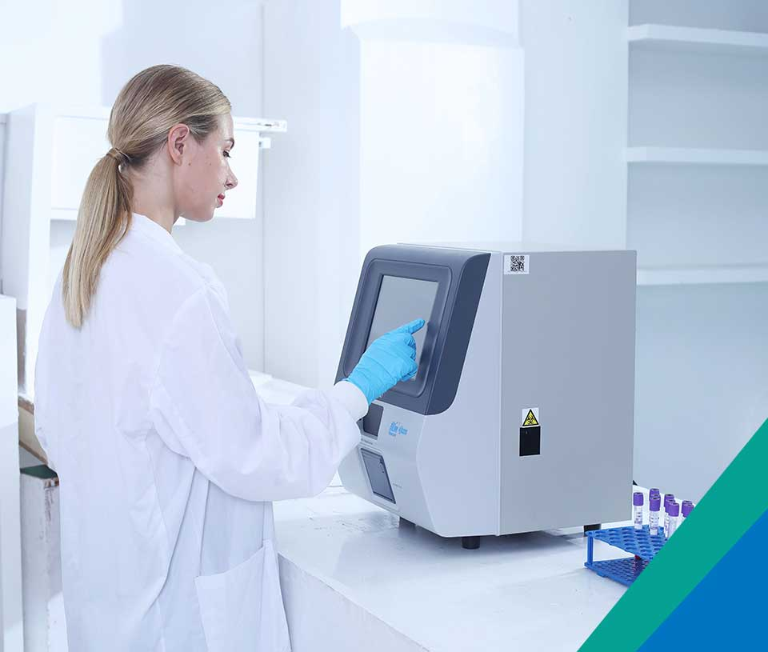
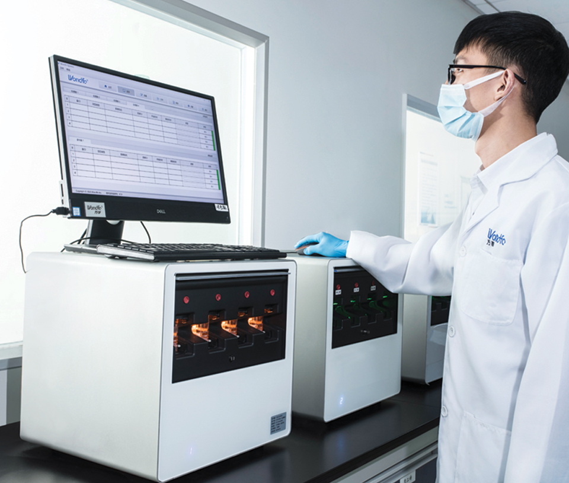
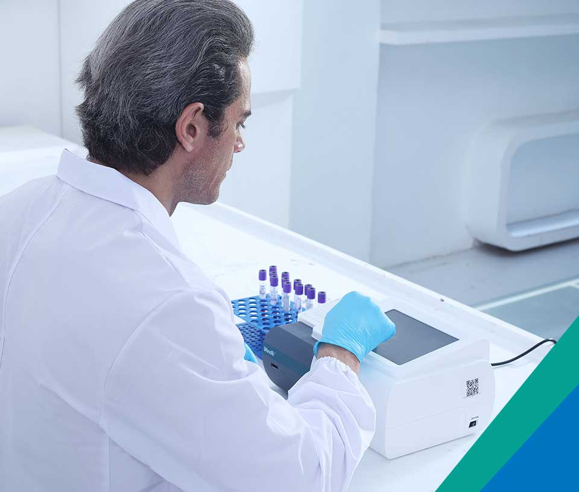

Our Products
Colloidal Gold Platform
- The most developed technology platform.
- Easy to use, require no equipment to process the sample or read the result.
- Wide range of applications, including detecting acute infectious disease, drug of abuse, etc.
- Galen 2019-nCoV Antibody Test kit is the first one of its kind that got approval to market in China.
- Easy to use, require no equipment to process the sample or read the result.
- Wide range of applications, including detecting acute infectious disease, drug of abuse, etc.
- Galen 2019-nCoV Antibody Test kit is the first one of its kind that got approval to market in China.

Our Products
Immunofluorescence Platform
The platform includes 50+ kinds of reagents and and three high-performance devices, focusing on detecting
cardiovascular disease, inflammation, kidney injury, sex hormones, thyroid function, diabetes, tumor, and
others.
The number of our Finecare Meter series installed in all levels of medical institutions is the largest in China. Our Finecare Meter series also have the broadest test menu.
The number of our Finecare Meter series installed in all levels of medical institutions is the largest in China. Our Finecare Meter series also have the broadest test menu.

Our Products
Molecular Diagnostics Platform
· Integrated diagnostic solution
· Full-automatic
· 1 Test Cassette = 1 Micro PCR Lab
· Joint Ventures: Wondfo iCubate, Wondfo Cartis
· Full-automatic
· 1 Test Cassette = 1 Micro PCR Lab
· Joint Ventures: Wondfo iCubate, Wondfo Cartis

Our Products
Coagulation Platform
The platform includes Semi-Automatic Blood Coagulation Analyzer and Optical Blood Coagulation. Our optical blood
coagulation analyzer can test PT, APTT, TT, FIB, and ACT simultaneously, the first of its kind in the world.
Our Products
Dry Biochemical Platform
Wondfo Dry Chemistry Analyzer can test 16 items and provide the result within 2 minutes, ideal for the detection
of cardiac markers, kidney function, liver function, pancreatitis, etc.
Features:
- The most comprehensive biochemical tests
- Enhanced enzymes stability
Features:
- The most comprehensive biochemical tests
- Enhanced enzymes stability
